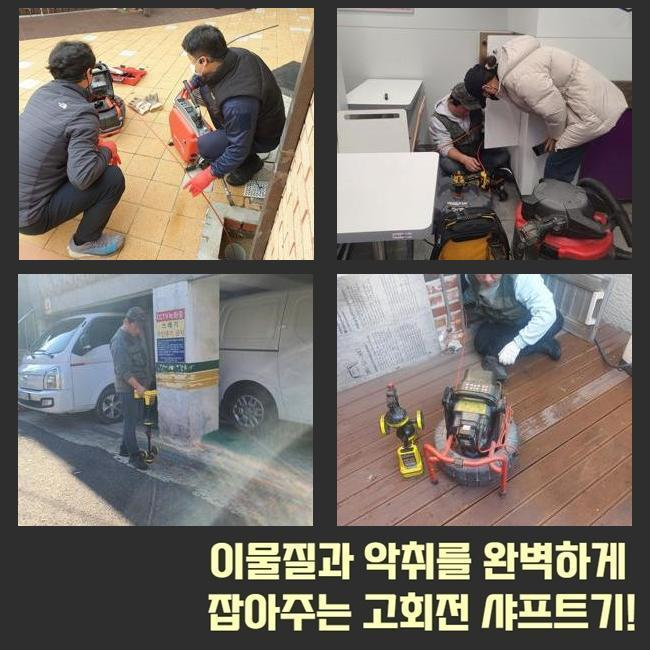
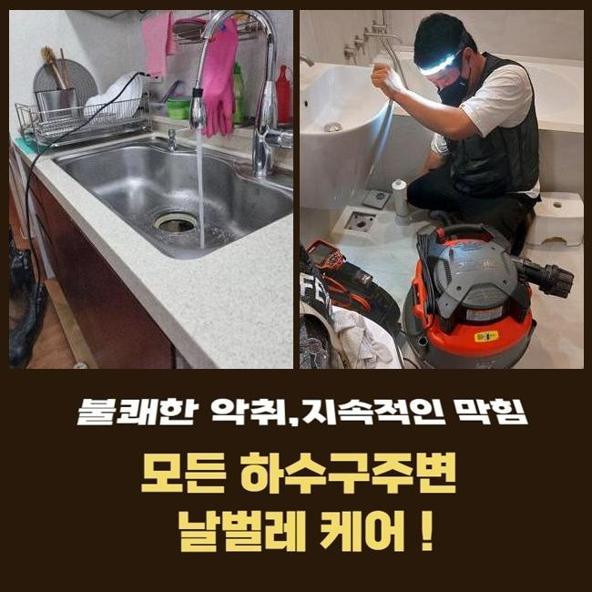
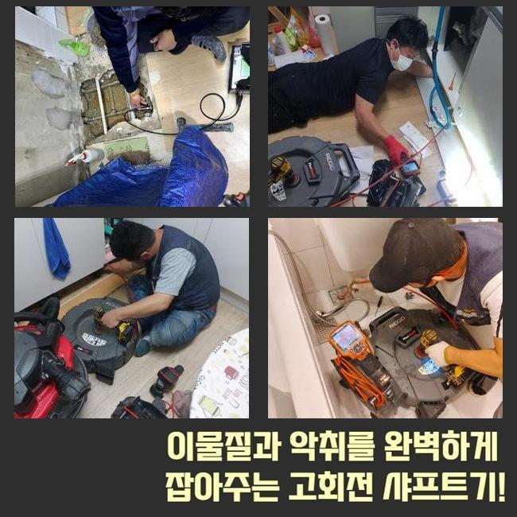
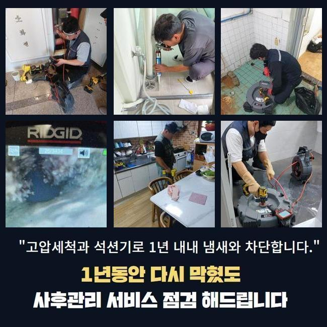
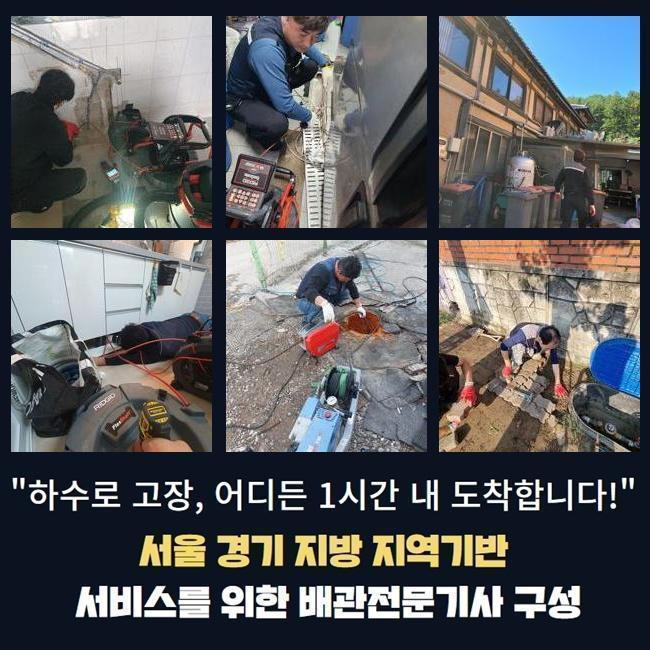

🏠 수원 신안동세탁실뚫음 지동 하수구뚫는비용 누수탐지공사
수원 지동 싱크대막힘 전문 시공 후기

📋 작업 개요
- 위치: 수원 지동, 지동, 수원
- 서비스 유형: 싱크대막힘, 하수구막힘, 배관막힘, 맨홀막힘, 누수수리, 뚫는업체, 배관청소, 고압세척, 설비공사, 배관보수
- 작업 일시: 2025. 2. 10. 3:52
- 업체명: 하수구수사대 (010-5615-2118)
🔍 문제 상황
수원 신안동세탁실뚫음 지동 하수구뚫는비용 누수탐지공사
지역 내의 식당에서 하수구 시설의 막힘으로 운영이 힘든 상태라고 빠르게 찾아와달라고 신청을 받고 다녀왔습니다
식품을 판매하는 곳에서는 하수구가 가로막히는 문제점으로 인해 수도시설을 사용하지 못한다면 음식 만드는 활동이 어려우니 손님맞이를 할 수 없습니다
이 사안을 해결해야만 장사하시는 분의 손실을 감축할 수 있기 때문에 스케줄을 얼른 잡고 다녀와서 보수해드리기로 했어요
현장에 계셨던 고객님은 주방 밑의 배수구가 막힌건지 물 내려감이 더디고 바깥에 있는 커다란 하수구로부터 물이 범람하는 일도 더해진 상황이라고 하셨어요
식당 안에 달려있는 부엌 부근의 배수구도 개선시키고 야외의 배수시스템까지 손봐드릴 필요가 있었기에 쉽게 끝나지는 않는 시공에 들어가야했습니다
작업에 착수하기 이전에는 전체적으로 현장 상황을 참고하여 완성까지 이르는 작업 진행시간에 대해서 계산해서 원하시면 알려드립니다
관로가 접해있는 부분이 많다면 여러곳들에 문제가 있다면 말끔하게 고치려면 약간 지연될 수 있습니다
식당 밖에 있는 하수구 안을 바라봤더니 맨홀부터 녹물이 줄줄 나왔고 맨홀 옆의 바닥도 더러운 오물에 휩싸여서 정돈되지 않은 상태였습니다
작업 중의 결함이 나타나지 않도록 강도 조절을 하면서 시공을 끝내드리겠다고 약속드리고 관로를 보기 시작했습니다

🔎 원인 분석
💡 전문가 진단: 정밀 진단 장비를 사용하여 슬러지의 고착 여부를 판명하고 타격/세척 작업을 실시했습니다.
가볍게만 보아도 오염물질이 감별됐습니다
뭉쳐있는 기름찌꺼기들이 덕지덕지 붙고 떠다니는 걸 바로 확인할 수 있는 상황이었으므로 노출되는 지점의 세정에 들어가서 안을 닦아내야 했습니다
가장 먼저 주방배관부터 청소작업을 거쳐주고 배관에 넣는 카메라를 밀어넣어서 상황을 봅니다
크고 작은 관로들이 어떤 식으로 결합되어 있는지 확인을 해준 이후에는 고압수를 쏴서 강력하게 흡착되어 있는 유분기 어린 슬러지를 세척하기로 단계를 구상했습니다
이 수준에서는 아무리 카메라를 켜봐도 내부를 인식하기 어려울 듯 하여 안에 고인 물을 빼내는 석션 절차를 우선 진행했습니다
강하게 흡입하는 석션기는 청소기와 비슷하게 생긴 장치인데 누적된 잔여 오염수와 노폐물들을 효율적으로 겉으로 빼내어주는 원리로 동작됩니다
흡수력이 뛰어나다보니 묽은 물질이라면 빠르게 호스 안으로 들어가서 집수통 내에 차곡차곡 쌓입니다
점도가 높은 찌꺼기나 벽과 한몸처럼 말라붙은 오물은 삭제시키기 힘들어서 석션 단독 이용으로는 배관을 시원하게 뚫어내는 경우가 미미합니다
어떤 현장에 가더라도 늘상 이 석션기를 작동시키고 있을만큼 배관의 말끔한 세척을 잘 끝내려 한다면 항상 가져가야 한답니다
석션을 돌려서 배관 안을 싹 쓸어준 이후에 카메라를 깊숙이 배정해봤습니다
내시경을 쓰게 된다면 깊숙한 영역에 매립된 채 독특하게 배치된 배관일 때도 놓치는 구석 없이 살펴보면서 오염물질 종류와 타격을 입은 구역들에 대해 분석해 낼 수 있습니다

🔧 작업 과정
이번에 본 파이프를 떠올려보면 끈적한 점성이 있는 유분과 유분막이 많이 관찰됐습니다
이 부분들이 아무래도 위급한 연락을 주신 식당의 주된 동기라는 느낌을 받았습니다
배수관 마개를 뚫고 새어나간 기름 성분이 통로 직경에 꽉 들어차게 됐고 그 탓에 바깥쪽까지 내려갈 곳을 상실하게 되고 이물질과 하수가 더 누적되면서 범람 사태까지 벌어진 것이었네요
석션과 샤프트를 병행해서 세척하는 동시에 관로들이 연결되는 바깥에 있는 맨홀 안도 개선을 해줘야 했습니다
플렉스샤프트라는 장치는 헤드에 갈고리 형식의 노커가 장착되어 있는 형상입니다
석션의 흡입으로는 역부족인 덩어리진 노폐물이라거나 관로에 오래 눌어붙어있는 고착물을 긁어내거나 작은 입자로 분해할 수 있습니다
이러한 두 청소 장비와 내부관찰용 카메라까지 빠짐없이 번갈아가면서 사용해야지 맡은 바인 청소가 만족스럽게 끝나며 가로막혀있는 배수로의 통로도 다시 나오게 됩니다
세부적인 조사에 착수해보았더니 관로가 큰 편에 많이 지저분하여 고압세척기로하는 딥클렌징도 도움이 될 것 같았습니다
앞선 장비들의 활용으로 하수의 이동성이 제법 트였기에 다음으로는 고압수 청소기계를 넣어서 맑은 관로로 조성했습니다
강한 압력의 물을 시원스럽게 발사하는 노즐을 조절해서 특히 오물들로 붐비는 구간을 집중타격했습니다
꼼꼼하게 고압수를 쏘고나니 결국 통로를 가로막던 더러운 슬러지 물질을 타개했습니다
시공 전에 카메라 기기로 관로가 품은 문제점에 대해서 차분하게 관찰한 다음에 집중력있는 청소 작업을 실시해서 많게만 느껴졌던 오물들을 제거하는 이번 작업에 좋은 결과를 만들어냈습니다
시공 단계를 끝내면서 내부 검토를 다시 해보니 전이랑은 딴판으로 지저분한 오염물질들도 너는 사라졌었고 오염됐던 내부 벽면도 오물을 벗겨내서 배관이 더 깔끔해진 것을 드디어 목격하게 됐습니다
혼탁한 색상으로 배관 내에 중단되어 있던 오래된 고인물도 사라지고 장치에 묻던 유해한 물질들이 없어졌습니다
아무래도 레스토랑이나 식당은는 식품을 다루는 양이 대폭 증가하기 때문에 아무래도 막힘이 생길 상황이 자주 재발됩니다!
손질한 식자재의 부속물이나 물과 섞이지 못하는 기름기가 하수구로 진입하지 않도록 싱크대를 쓰시는 고객님께서도 조심해주셔야 할 부분이 있습니다
끝내기 이전에 통수 테스트를 해보면서 시공이 괜찮게 끝난건지 더블체크를 해보게 됩니다


✅ 작업 완료
싱크대 밸브에서 물을 모아서 폐기하면서 깨끗하게 변모한 옥외 하수시설까지 막히는 기색 없이 유연하게 흘러나가는지 체크해주는 작업입니다
아래로 내려보낸 물이 원만하게 흐르는 것을 눈에 띄었는데요
하수배관이 정상화가 됐으니 질의응답이 있다면 친절하게 받고 주변정돈 후 이동했습니다
하수흐름이 끊긴다면 비용을 절약하려는 일념으로 자가처리를 해보시려다 관내 상태가 더 나빠질 수 있습니다
배관문제에 대해 의뢰해주시면 얼른 달려가서 막힘이 나타난 사유를 파악 후에 청소하니 이 점 참고해주시면 감사드리겠습니다



⚠️ 베란다 누수 및 방수 관리 방법
- ✅ 비가 많이 올 때 창틀 주변이나 아래층 천장에 얼룩이 생기는지 정기적으로 확인해 보세요.
- ✅ 우수관 주변 실리콘 마감이 들뜨거나 깨진 틈새가 있는지 손상 여부를 수시로 체크하세요.
- ✅ 베란다 바닥 타일의 줄눈(메지)이 소실되면 그 틈으로 물이 침투하여 누수가 유발됩니다.
- ✅ 누수 의심 증상 발견 시 방치하면 아래층 손실이 커지므로 즉시 전문가의 진단을 받으십시오.
💡 핵심 정리
- 확실한 장비 작업(내시경 점검 및 샤프트 스케일링)으로 원인을 뿌리 뽑습니다.
- 작업 후 1년 이내에 동일한 부위 재발 시 100% 무상 A/S 서비스를 보장합니다.
- 서울 · 경기 · 인천 전 지역에 24시간 언제든 긴급 출동할 수 있도록 항시 대기 중입니다.
❓ 자주 묻는 질문 (FAQ)
🚨 수원 지동 싱크대막힘 문제로 고민이신가요?
정확한 원인 진단과 확실한 시공으로 재발 없는 해결을 약속드립니다.
24시간 긴급 출동 | 서울 · 경기 · 인천 전지역 | 1년 내 재발 시 무상 A/S